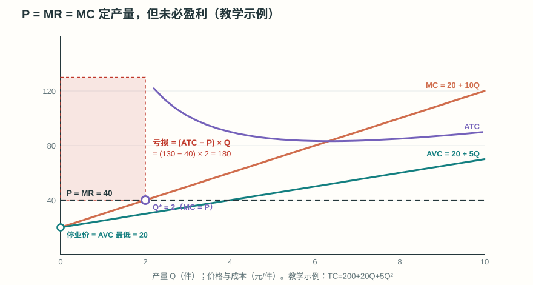
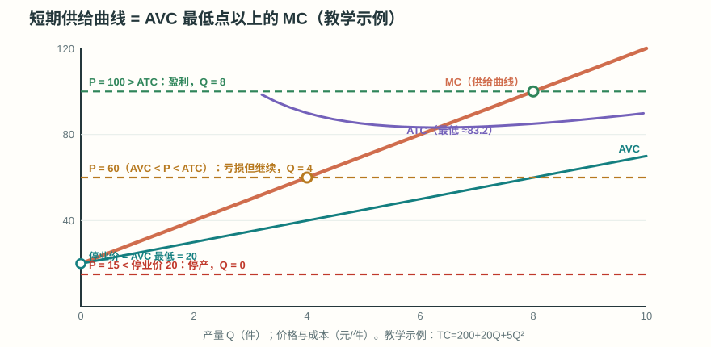

CHAPTER 13 · MICROECONOMICS
完全竞争市场（上）：利润最大化
价格由市场决定，产量由自己决定：用同一组数字推导 P=MR=MC、停业条件，以及为什么供给曲线就是 MC 的一部分。
价格摆在眼前，产量自己定
设想一个农户，他种的粮食在一个大市场上按当前价 40 元/件出售。这个价格不是他能决定的：他只是成千上万卖家中的一个，提价一分钱就一件也卖不出去。他能决定的只有一件事——生产多少。
本章就用这个具体问题展开：先弄清楚怎样的市场会让企业变成“价格接受者”，再推导全微观经济学最通用的决策法则 MR=MC，最后回答一个很实际的问题：当最优产量下仍在亏钱时，到底该不该硬着头皮生产。
完全竞争的四个条件
完全竞争 perfect competition 是一个理想化的市场基准。它很少完全出现在现实中，却是理解其他市场结构的起点——就像先从“无摩擦”理解力学一样。四个条件需同时成立：
| 条件 | 含义 | 作用 |
|---|---|---|
| 大量买者与卖者 | 没有一个参与者能单独影响价格 | 人人都是价格接受者 |
| 产品同质 | 各家的产品完全一样，买家无法区分 | 价格是唯一的竞争维度 |
| 自由进入与退出 | 企业可无成本地进出行业 | 长期利润会被竞争抹平 |
| 完全信息 | 所有人知道价格、质量与技术 | 价格迅速趋于一致 |
农产品批发市场是常被引用的近似例子：卖家很多、产品高度同质、价格公开。但现实中总会有摩擦——品牌、地理分隔、信息不全。缺少任一条件，市场就有某种市场势力（market power），这将在后续的垄断、垄断竞争与寡头章节讨论。
价格接受者：一条水平的需求曲线
完全竞争最重要的推论是：单个企业是价格接受者 price taker。它面对的需求曲线是一条水平线——产量怎么变，都只能按现行市场价卖出。提价卖不出去，降价又没必要（市场价下想卖多少就卖多少）。
因此对企业而言，价格、平均收益与边际收益三者相等：
原因很直接：总收入 TR=P×Q，所以平均收益 AR=TR/Q=P；多卖一件的收入也恰好是 P，所以 MR=dTR/dQ=P。这一点是理解全部后续内容的关键——在垄断市场里需求曲线向下倾斜，MR<P，结论就完全不同。
MR = MC：利润最大化的通用法则
利润等于总收入减总成本。增量地看：只要多生产一件带来的收入超过它的成本（MR>MC），就值得增产；若 MR<MC，就该减产；恰在两者相等时，利润达到最大。
这条法则对所有市场结构都成立，区别只在于 MR 的表达式不同。完全竞争下 MR=P，于是它简化为 P = MC。
用本章的教学示例验证：市场价 P=40，TC(Q)=200+20Q+5Q²，所以 MC=20+10Q。令 P=MC 得 40=20+10Q，解出 Q*=2。此时 TR=40×2=80，TC=200+40+20=260，利润 π=80−260=−180。

短期三步决策与停业条件
短期里固定成本无法调整，企业的决策分三步：第一步按 MR=MC（即 P=MC）确定产量；第二步比较价格与平均可变成本，判断要不要生产；第三步用 (P−ATC)×Q 计算真实利润或亏损。
为什么门槛是 AVC 而不是 ATC？固定成本无论生产与否都要承担，属于沉没成本，不该进入短期决策；只有可变成本是“继续生产才会发生”的支出。三种情形如下：
| 情形 | 价格区间 | 行为 | 含义 |
|---|---|---|---|
| 盈利 | P > ATC | 继续生产 | 每件都赚钱 |
| 亏损但生产 | AVC < P < ATC | 继续生产 | 亏损小于停业，摊回部分固定成本 |
| 停业 | P < AVC | 停产 | 价格连可变成本都覆盖不了，多产多亏 |
回到教学示例：在 Q*=2 处 AVC=20+5×2=30<P=40，属于第二行——亏损 180，但停业会亏掉全部固定成本 200。因此短期内应继续生产。还要区分停业（短期，不生产但固定成本仍在）与退出（长期，彻底离开行业）。
短期供给曲线：AVC 最低点之上的 MC
把上面的决策汇总，得到一个重要结论：完全竞争企业的短期供给曲线，就是它的边际成本 MC 曲线在平均可变成本 AVC 最低点以上的那一部分。
理由很直接：企业总是按 P=MC 确定产量，但只有当 P≥AVC 最低点时才愿意生产。价格上升时，企业沿着 MC 曲线向上移动，供给量增加；价格低于 AVC 最低点时，供给量降为零。整个市场的短期供给曲线，则是所有企业供给曲线的水平加总。

这也解释了第 4 章供给定律的来源：它并非凭空假设，而是企业按 P=MC 最优决策的结果。但请留意边界——这里“向上倾斜”来自本例的成本结构（MC 在相关区间递增）。并不存在“供给必然向右上倾斜”的普遍定律：当 MC 在相关区间递减时，短期供给的斜率就会不同。
交互实验：改变市场价格
完全竞争企业实验
成本函数 TC(Q)=200+20Q+5Q²（教学示例）。拖动滑块改变市场价格，观察最优产量、单位成本和盈亏如何随价格变化。
P=40：Q*=2，AVC=30，ATC=130，利润=−180；P>AVC，继续生产。
每次根据解析式重新计算，不使用随机值；默认 P=40 对应正文的教学示例。
在图 2 中，价格从 60 升到 100，企业的亏损从有到无。如果用“价格高于 ATC 才生产”来判断，会得出什么错误结论？
查看答案
会错误地得出“P=60 时应该停产”。实际上 P=60>AVC=40，继续生产能摊回部分固定成本，亏损小于停业；只有 P<AVC 最低点（20）时才应停产。短期决策的门槛是 AVC，不是 ATC。
引用文献、定义与适用范围
本章的图形与数值均从假设模型 TC(Q)=200+20Q+5Q²（固定成本 200）推导，属于教学示例，不是观测数据；利润最大化、停业条件与短期供给的成本基础参考以下教材：
- OpenStax · Principles of Microeconomics 3e, Ch. 7: Production, Costs, and Industry Structure
- OpenStax · Principles of Microeconomics 3e（教材首页）
本章只讨论短期、且企业无法影响价格的完全竞争情形。长期中自由进出的影响、以及市场整体的效率评价，留给下一章。需要再次提醒：完全竞争是效率参照系，不是现实市场的普遍形态。